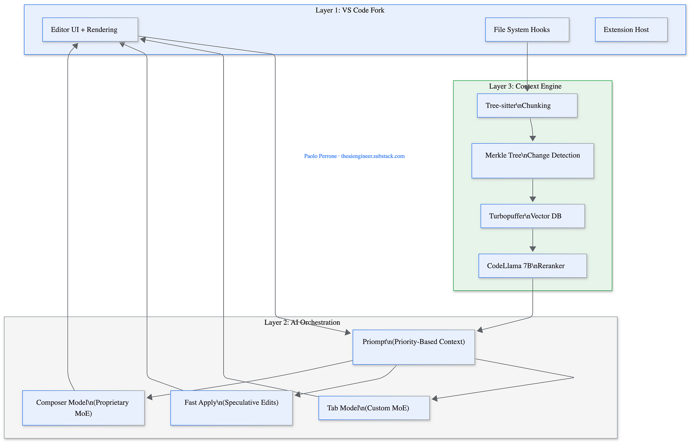
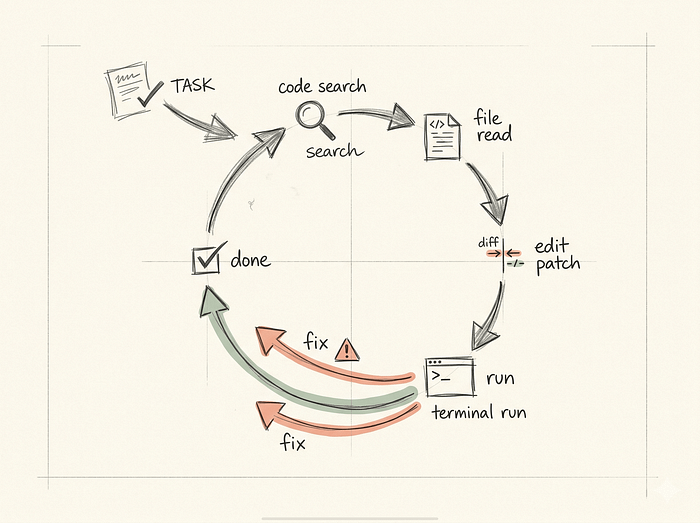
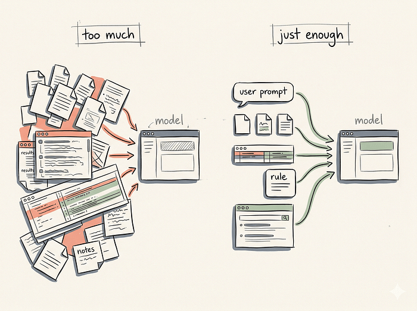
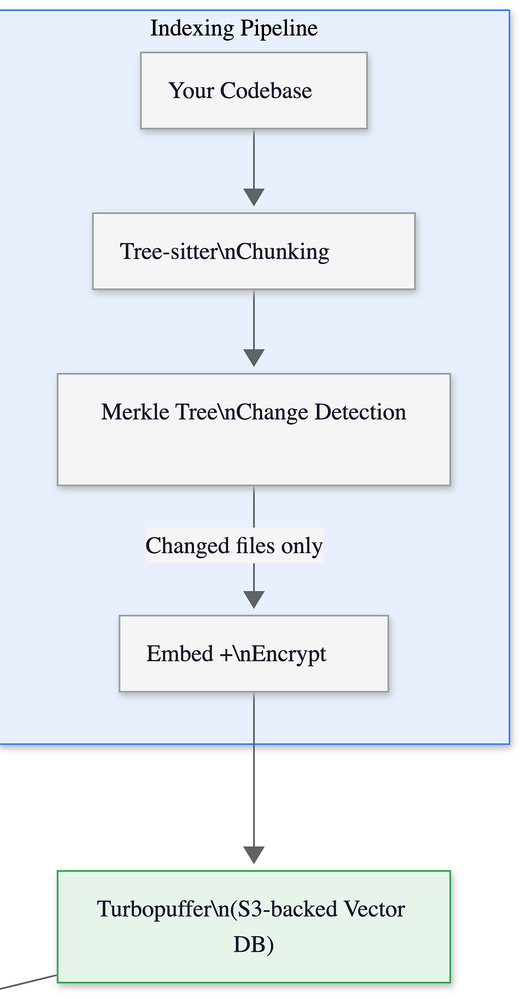
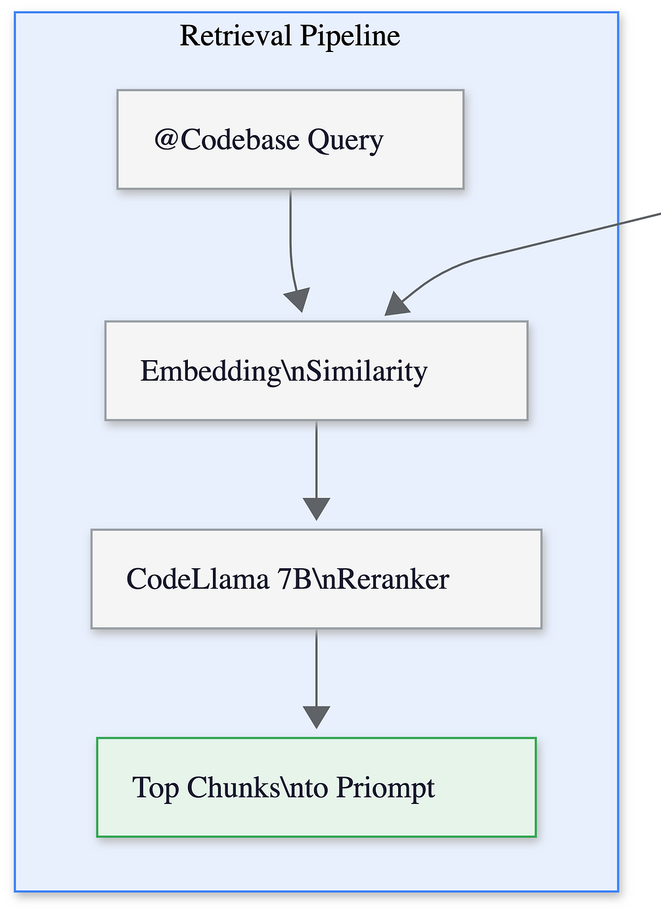
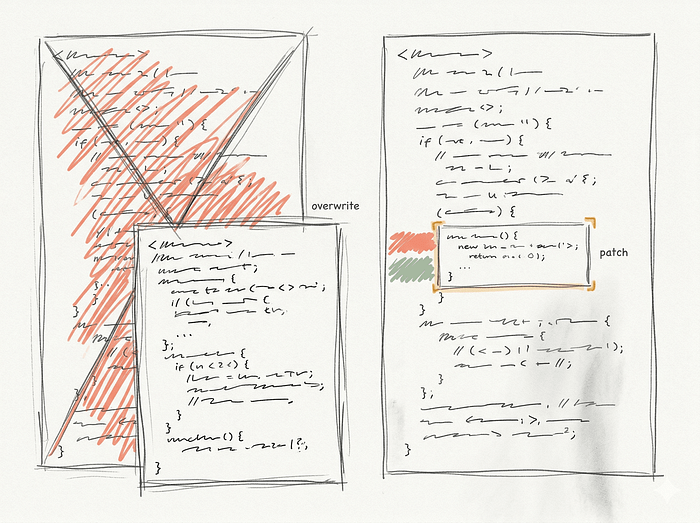
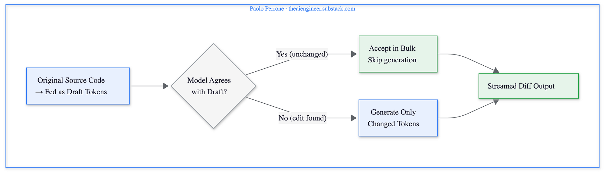
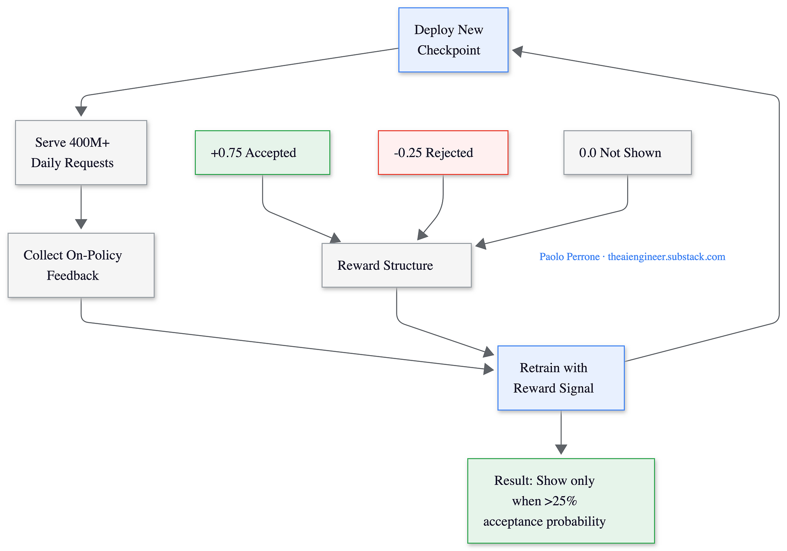
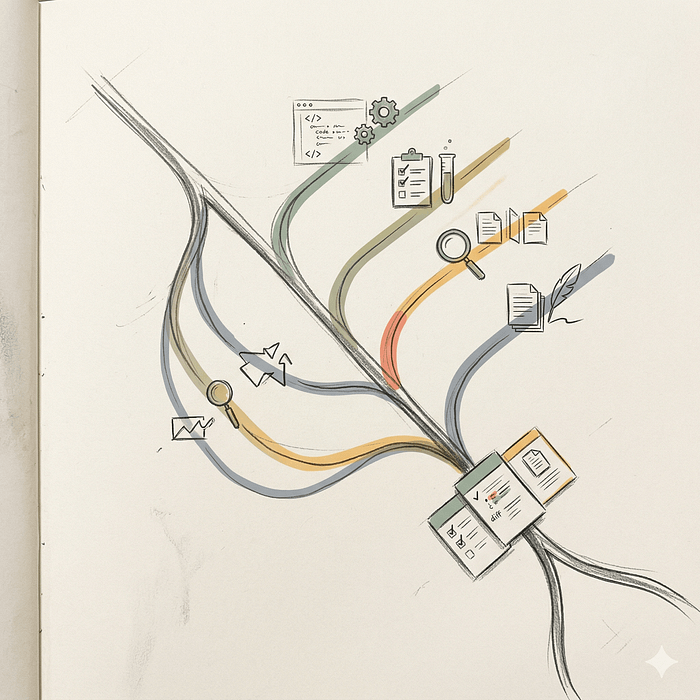

You know GET /users/42 — deterministic, stateless, instant. This isn't a prompting workshop; it's a systems-design one for the other kind of endpoint.
REST APIswhat you know
Deterministic
Input A → Output A, every time.
Stateless, and fine with it
Each request is complete on its own.
Instant
One round trip, one flat JSON body.
Fixed cost
A request costs a request.
LLM APIswhat you're building for
Probabilistic
Same input, a distribution of possible outputs.
Stateless protocol, stateful illusion
"Memory" is you resending history.
Streamed
Tokens arrive over time, not as one blob.
Variable cost
Billed per token, in and out.
We're not learning to prompt ChatGPT. We're learning to build resilient, production-grade software around an endpoint that won't promise the same answer twice.
Under the hood of every request
From Prompt to Token Stream
Four handoffs happen before you see a single character — and step 3 repeats once per token, not once per request.
Input$0.00361,200 tok × $0.003 / 1K — your prompt + full history, resent every call
Output$0.0060400 tok × $0.015 / 1K — usually priced 3–5× higher than input
Total, this call$0.0096scales with conversation length, not request count
Verbose prompts and verbose completions aren't just slow — they're line items on your invoice.
Six knobs on one decoding step
Mastering API Parameters
1
temperature
How random the next token is
2
top_p
Cuts the tail of the distribution
3
max_tokens
Hard cap on output length
4
presence_penalty
Pushes toward new topics
5
frequency_penalty
Suppresses repetition
6
stop
Custom sequences that halt generation
Every parameter answers the same question, differently: which token comes next?
Parameter 1 of 6
temperature
Type
Float
Range
0.0 – 2.0
Effect
Controls output randomness. Low values make the model deterministic; high values make it creative.
Best for
0.0 for code and data extraction · 0.7–1.0 for brainstorming
temperature reshapes the whole probability curve before a token is ever picked.
Parameter 2 of 6
top_p (nucleus)
Type
Float
Range
0.0 – 1.0
Effect
Restricts sampling to the smallest set of tokens whose cumulative probability reaches p.
Best for
An alternative to temperature, not a companion to it.
⚖️
Rule of thumb: tune temperatureortop_p — not both. Stacking them makes the sampling behavior much harder to reason about.
Parameter 3 of 6
max_tokens
Type
Integer
Range
Model-specific ceiling
Effect
Hard cap on the number of tokens the model is allowed to generate.
Best for
Budget control, and preventing runaway generation loops.
This is the one parameter that protects your bill, not your output quality.
Parameter 4 of 6
presence_penalty
Type
Float
Range
−2.0 – 2.0
Effect
Penalizes any token that has appeared at least once already — a flat, one-time hit.
Best for
High values force the model onto new topics instead of circling back.
It doesn't care how often a token repeated — only whether it showed up at all.
Parameter 5 of 6
frequency_penalty
Type
Float
Range
−2.0 – 2.0
Effect
Penalizes tokens in proportion to how often they've already occurred — scales with repetition.
Best for
High values stop repetitive phrasing or near-verbatim echoing.
presence_penalty asks "have you shown up?" — frequency_penalty asks "how many times?"
Parameter 6 of 6
stop
Type
Array of strings
Range
Up to a few custom sequences
Effect
Generation halts immediately the moment any listed sequence would be produced.
Best for
Custom parsing, multi-agent turn-taking, or enforcing your own formatting bounds.
The only parameter that gives you a hard, deterministic exit from a nondeterministic process.
Now — putting the model to work
Function calling and tool use
The model as reasoning engine
Function Calling / Tool Use
The LLM never touches the weather API. It just decides — correctly, most of the time — that your code should.
Let's get hands-on
Workbench Time
Live sandbox: wiring up tool calls end to end.
AI-Native Software Engineer Program · Deep Dive
System Design of Cursor
What actually happens between your keystroke and the diff.
Twenty minutes. No hand-waving.
Let's start with a crime scene
You pressed Tab. What just happened?
Already done
Index
Repo parsed, chunked, embedded — in the background, continuously
→
Step 1
Retrieve
~13,000 tokens picked out of a million lines
→
Step 2
Assemble
Rules, open files and hits compete for space
→
Step 3
Predict
Your next edit — not your next line
→
Step 4
Decide
Show it… or say nothing at all
◀ Steps 1–4 · ~260 ms end to end · one third of a blink ▶
That is a distributed system. It just happens to look like autocomplete.
First, five ideas
Five things to know before we open the hood.
Idea 1
Tokens & the context window
Why your repo can't just be pasted in
Idea 2
Embeddings
How you search code by meaning
Idea 3
Merkle trees
How you skip work you don't need
Idea 4
Speculative decoding
Why "Apply" is suspiciously fast
Idea 5
Reinforcement learning
Why Tab learned to shut up
None of these are hard. All five show up in the architecture in about eight minutes. Skip them and the diagrams look like magic.
Idea 1 of 5 · Tokens & context
The model has a desk. Not a warehouse.
Text becomes tokens
Why·is·this·null?
5 tokens · ~4 characters each · the unit of cost and of space
Tokens compete for the desk
SYSTEM PROMPT + RULES
YOUR FILES
HISTORY
← room left to think
Weights are what it knows. Context is what it's looking at. And your million-line repo does not fit on that desk — not today, not with a 1M-token window. Everything else follows from that one sentence.
Idea 2 of 5 · Embeddings
Embeddings: search by vibes.
Not one of those words appears in the code. Brilliant at concepts — useless at exact names, where grep still wins. Remember that; it comes back.
Idea 3 of 5 · Merkle trees
Merkle trees: lazy spot-the-difference.
root a91f… ≠ b30c…
src/ 7d2e… ✓
api/ 4c8b… ≠
auth.ts ✓
db.ts ✓
users.ts ≠
index.ts ✓
🌳
Hash every file. Hash the hashes. Keep going until one number at the top represents the entire repo. Compare two roots: equal means a million lines just got verified in one comparison. Not equal means you walk down and find the one file that changed.
Git does this. Blockchains do this. Cursor does it so it doesn't have to re-read your repo every five minutes.
Idea 4 of 5 · Speculative decoding
Checking is cheaper than writing.
Slow way one pass per token
foruserinusers:send(user
Cheap draft guesses a whole chunk
foruserinusers:log(x
Big model verifies all of it, in ONE pass
✓✓✓✓✓✗——
Net result
freefreefreefreefreewritewritewrite
Five tokens for the price of one forward pass. Wrong guesses cost nothing — they're just discarded. So the whole game becomes: get a really good draft, cheaply. 🤔
Idea 5 of 5 · Reinforcement learning
Treats. And no treats.
+0.75
You pressed Tab
Good dog
−0.25
You ignored it
You still had to read it
0
It said nothing
No harm done
Model suggests (or stays quiet)
→
You accept, ignore, or never see it
→
Score the action with the table above
→
Nudge the policy toward higher scores
↻ repeat, millions of times a day — no labelled dataset anywhere in this loop
Look at the third box in the table. Silence scores better than a bad guess. Nobody wrote that rule — the reward function implies it. That is going to matter.
Now — the architecture
Five ideas, one system
The mental model
Model + Tools + Instructions
The model is the engine. The harness is the rest of the car — including the brakes. Paste your repo into a chat window and you get a very smart text generator, not Cursor.
The architecture
The whole system, one picture.

Layer 1 is a fork of VS Code — they needed the rendering pipeline and file-system hooks a plugin can't reach. Layer 3 turns your repo into retrievable chunks. Layer 2 assembles the prompt and routes it to the right model. Diagram: Paolo Perrone, How Cursor Actually Works: Architecture and Engineering.
The engine room
It's a while loop. That's the agent.

Diagram: How Cursor Actually Works Under the HOOD… by Anubhav.
Gather context → pick a tool → look at what came back → decide: continue, stop, or ask the human. Repeat.
A raw API call does this once. An agent does it as many times as the task needs. That's the entire difference.
The intelligence isn't in the loop — it's about twenty lines of code. It's in what you put in front of the model on each pass.
The hard part
Too much context is worse than too little.

Diagram: How Cursor Actually Works Under the HOOD… by Anubhav.
Remember the desk. Something has to decide what goes on it: your rules, open files, tagged files, search hits, the branch diff, the conversation so far.
Missing context gets you "I can't find that." Irrelevant context gets you a confident edit in the wrong file.
Irrelevant context doesn't dilute the signal. It competes with it.
Layer 2 · Orchestration
Every piece of the prompt has a priority.
Cursor builds prompts the way React builds UI — components, each with a priority score. Overflow the token budget and a binary search drops the lowest-priority pieces until it fits. They call it Priompt.
RULES · p100
YOUR PROMPT · p100
@TAGGED FILES · p80
BRANCH DIFF · p70
SEARCH HITS · p40
DROPPED
Your rules never get dropped. The 40th search result does. When the window gets tight, the degradation is designed — not random.
Layer 3 · Where ideas 2 and 3 show up
Index once. Retrieve per query.


Write path left, read path right. Tree-sitter splits code at function and class boundaries, not line counts. The Merkle tree gates the expensive step, so one edit costs one re-embedding. Retrieval is two-stage: cheap vector search casts a wide net, then a CodeLlama-7B reranker — up to 500k tokens per query — picks the winners. Diagrams: Paolo Perrone.
From model output to your disk
It patches. It doesn't overwrite.

Diagram: How Cursor Actually Works Under the HOOD… by Anubhav.
The model doesn't write files. It states intent: "replace this block with that block." A separate edit layer finds the block and applies it.
Two matches? It refuses and returns an error the model can read — so the next pass retries with more context instead of quietly corrupting your file.
Refusing to guess is a feature. It's also why you get a reviewable diff instead of a wall of regenerated code.
Idea 4, cashed in
Where's the free draft? It's your own file.

The model verifies the file against itself. Unchanged regions are accepted in bulk; only the diverging span is really generated. Diagram: Paolo Perrone.
A fine-tuned Llama-3-70B at roughly 1,000 tokens/second — about 13× vanilla. That's why "Apply" on a 600-line file feels instant instead of streaming for twenty seconds.
The Tab model
Not next line. Next edit.
Predicting your next edit is a different problem from finishing your line — and it needs context from files you never opened.
Idea 5, cashed in
Then they trained it with treats.

Serve → collect on-policy feedback → retrain → redeploy, on 400M+ requests a day, with a full retrain in 1.5–2 hours. Result: 21% fewer suggestions, 28% higher acceptance — the policy only speaks when it estimates a >25% chance you'll take it. Nobody picked that threshold; the reward function implied it. Diagram: Paolo Perrone.
So what's the actual advantage?
Not a better model. Better plumbing.
Which is exactly why a competitor renting the same model can't just copy it.
The line between suggestion and agent
It can run your tests.
The magic isn't that it wrote code. It's that it wrote code, ran a check, saw a failure, and tried again. Remove that red path and you don't have an agent — you have a chatbot with file access.
The unglamorous layers that make it usable
The loop runs inside a cage.
Trust doesn't come from accuracy claims. It comes from reversibility and a cheap way to say no.
Scaling past one desk
One context window is a bottleneck.

Diagram: How Cursor Actually Works Under the HOOD… by Anubhav.
On a big task, one agent juggles planning, coding, debugging and docs in a single window. The signal drowns.
So a parent spawns subagents — each with a clean window — and gets back summaries, not raw transcript. Plain markdown in .cursor/agents.
Good split: "audit every call site." Bad split: "you write the function, you write its caller." That second one is agent theater — parallelism you pay for and don't get.
The other bet
Where does the human sit?
Often the same model underneath. The whole disagreement is about who drives.
Before you get too excited
Expected +24%. Measured −19%.
Afterwards, they still believed they had been faster. The time went into reviewing and correcting output — and into the model not knowing conventions that live in nobody's documentation.
Possibly the most human result in AI research. It's also the argument for rules files and real review — not for a different model.
One thing to take away
Real agents are orchestrated loops.
References & diagram credits
Sources
How Cursor Actually Works Under the HOOD…
Anubhav · Data Science Collective, Medium — the agent loop, context assembly, diff application, modes, subagents, checkpoints. Source of the four hand-drawn diagrams.
How Cursor Actually Works: Architecture and Engineering
Paolo Perrone · Data Science Collective, Medium — the fork, Priompt, Tree-sitter, Merkle sync, Turbopuffer, the reranker, speculative edits, Tab Fusion & Tab RL, Bugbot. Source of the four flowcharts.
Cursor vs Claude Code
Paolo Perrone · theaiengineer.substack.com — the two philosophies, pricing, the token-efficiency test, and the METR study.
Cursor publishes some of this and not the rest: they pulled their detailed speculative-edits post in late 2024, have never published SWE-bench numbers, and don't disclose Composer's base architecture. The mechanisms here are well established; some of the model stack is reconstructed from behaviour and third-party reporting.
Thank you
Questions?
The model is the engine. The harness is the car. Now you've seen under the hood.